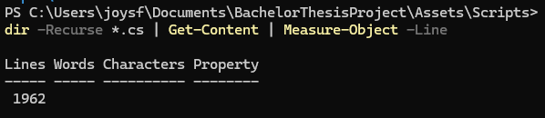
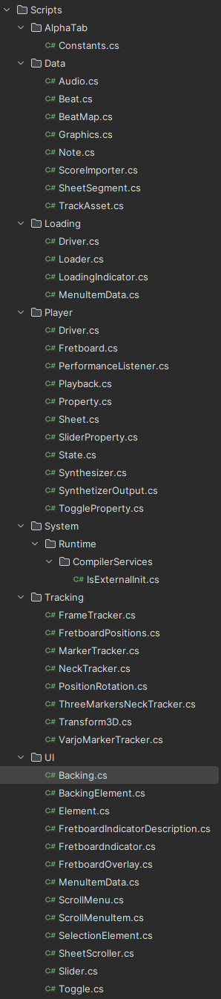

Ho proseguito la ristrutturazione raggiungendo il punto nel quale penso mi manchi solo la sezione riguardante il tracciamento, che penso di ristrutturare giovedi' in laboratorio.
Dato che c'ero ho anche pensato che sarebbe stato carino vedere quante righe di codice contiene il progetto, e il risultato e' il seguente:
Pensavo di piu' onestamente :') . Il numero di file e' invece 46, quindi immagino che in media ogni file contenga 42 righe.
